Finding a course on Coursera should be easy. Is it?
A heuristic review and a usability test of coursera.org
- Product
- coursera.org, from the search box to the enroll button
- My role
- Solo researcher: heuristic review, task design, recruiting, unmoderated test, synthesis, mockups
- Methods
- Review against Nielsen's ten heuristics; unmoderated think-aloud test in Lookback, five tasks
- Participants
- Two university researchers, each with a concrete skill they wanted to learn
- When
- August to September 2026
- What came out
- Three findings, one surprise, four recommendations, four mockups
What Coursera is, and the price question that started this study
What Coursera does. It hosts online courses, Specializations, Professional Certificates and degrees from universities and companies like Google and IBM. People search for a topic, compare options and enroll. Watching the videos is often free. Certificates usually cost money, either per course or through a Coursera Plus subscription ($59 a month at list price, $399 a year).
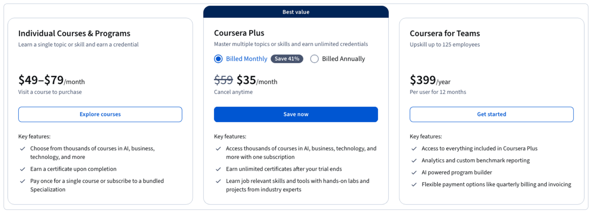
Who uses it. Students, career changers, and employees whose company pays. I focused on students who want a career-related skill, because that is who I am and who I could reach.
Why I chose it, and what worried me going in. When a skill I need is not covered in my classes, Coursera is where I end up, so I know the product as a user. What concerned me before I started was the price. Every course page leads with a blue Enroll for free button, but certificates cost money and the subscription costs $59 a month at list price. I wanted to know whether people can tell what they will actually pay before they hand over an email address. A confusing page on a news site wastes a minute. A confusing page on Coursera can cost someone a subscription they did not mean to buy.
What Coursera needs. It earns when someone enrolls and pays. One Google certificate alone shows 3.8 million people enrolled. Every step where a learner cannot tell what is free, what costs money, or which product is which is a step where Coursera either loses the sale or wins it and loses the trust.
What I wanted to learn: five questions on the path from a search to an enroll button
- Can a learner find a beginner-friendly course on a topic they actually want to learn?
- Do they understand the difference between a standalone course, a Specialization and a Professional Certificate?
- How easy is it to filter, compare, check the cost and time, and start enrolling?
- Do people realize how much courses on Coursera cost?
- Are people surprised when they go to enroll and find they have to pay a monthly fee?
These are the steps between a person and actually learning something. When they break, the person gives up or pays for the wrong thing. Both are bad for the learner and bad for Coursera.
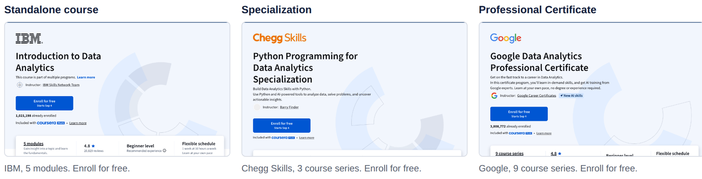
Methods: heuristic review to find problems; usability testing to learn how severe they are
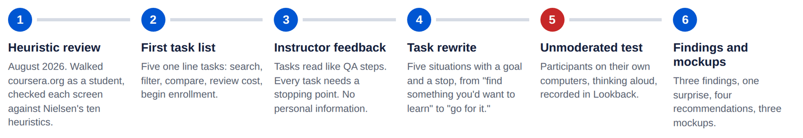
Heuristic review (August 2026). I walked through coursera.org the way a student would: searched "data analytics", opened course pages, and tried to enroll. At each step I checked the screen against Nielsen's ten usability heuristics and noted where it broke one. It is fast and cheap, but it is one person's opinion, so I treated the results as candidates to test rather than conclusions.
Unmoderated usability test. I wanted real people going through the design, not me and not an AI, and I wanted them doing it on their own time with nobody in the room nudging them. Participants opened coursera.org on their own computer, worked through five tasks while thinking aloud, and were asked to rate each task from 1 to 10 and answer four questions at the end. Sessions ran on Lookback.
Participants. I recruited through classmates, friends and university contacts, looking for people who had searched for a class online before and had a concrete skill they wanted to learn. Two university researchers were willing to take the test: one wanted an introductory course on single-cell RNA sequencing, one wanted the basics of the R programming language. Each had a real need, a limited number of hours, and a decision to make. In future it would be interesting to test with undergraduates to see whether their behavior and needs differ.
The tasks changed after review, and that mattered
My first task list was five lines on one screen: search for a topic, filter results, compare course and certificate options, review the cost and time, begin enrollment. The instructor's feedback was that this turns a participant into a QA tester ticking boxes instead of being themselves, that every task needs a stopping point, and that nobody should be asked to enter personal information. So I rewrote all five as situations:
| # | Task | What the participant was asked | What it tests |
|---|---|---|---|
| 1 | Find something you'd want to learn | Spend up to five minutes finding a course you would actually take. | This is Coursera's front door. |
| 2 | Make it fit your life | Same topic, a few hours a week, beginner level, done in a month or less. | This needs the level and duration filters, but nobody is told to filter. |
| 3 | Pick between two | Find two decent courses and work out, for each, whether you get a certificate and what it takes to earn it. Say which is the easier path. | This is the thing Coursera sells. |
| 4 | Check the cost and the time | For the course you like best, say out loud what it would cost you and how long it would take. | These are the two numbers that decide an enrollment. |
| 5 | Go for it | Start enrolling and stop before any personal details or payment. | This walks up to the paywall. |
What I learned from the heuristic review
Medium 1. The search page shows five things at once, and the courses lose priority
Heuristic: Aesthetic and minimalist design. Searching "data analytics" produced an AI overview, recommended cards, suggested questions, an open AI chat panel and a cookie banner, all at the same time. The actual results sat below the fold.
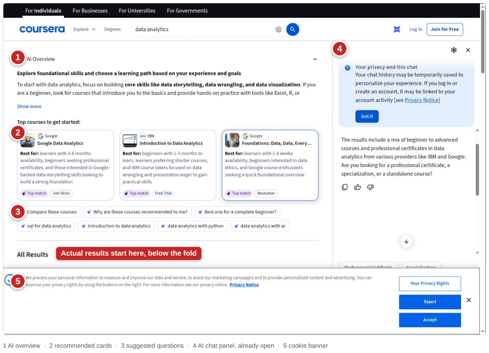
Medium 2. The AI chat stays open on the course page and hides a third of the page
Heuristic: Aesthetic and minimalist design. When a user opens a course page, the chat panel remains open. You have to close it in order to see the page in full view.
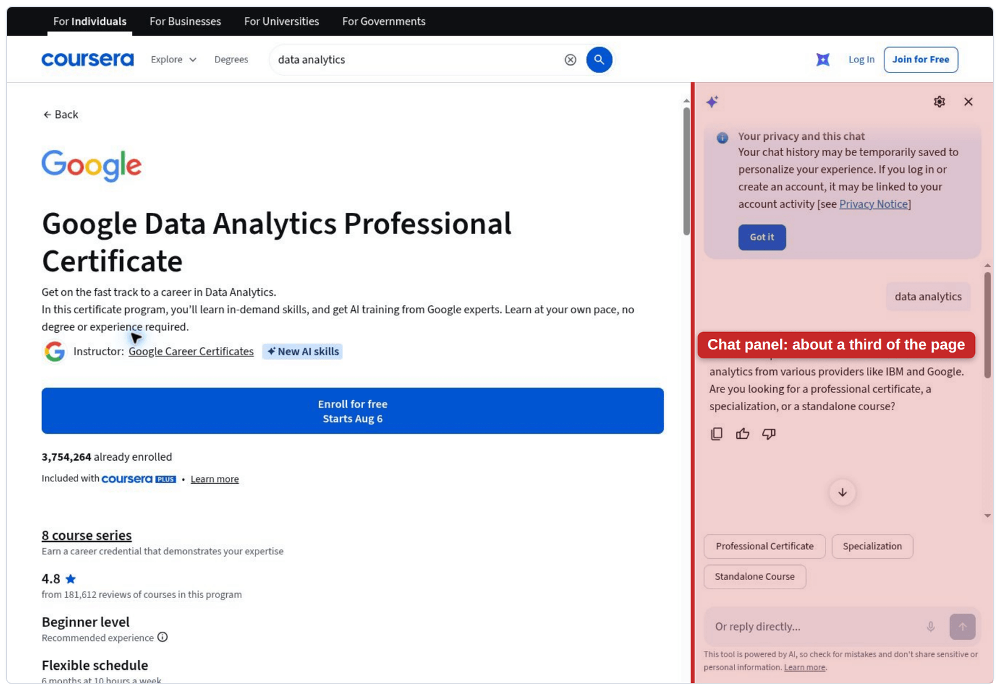
High 3. "Enroll for free" does not mean free
Heuristic: Match between system and the real world. The button says Enroll for free. The same page says the course is included with Coursera Plus. Nowhere on the page does it say whether the certificate is free, whether only part of the course is free, or whether a subscription will be asked for later. The price ($49 a month after a 7-day trial, for the Google certificate) only appears in the FAQ far down the page. For a student, free means free. I ranked this highest because it touches trust and revenue, not comfort.
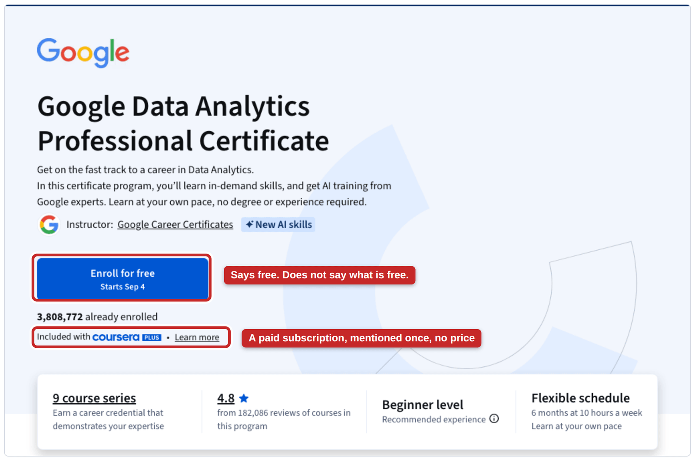
What I learned from the usability test
High Finding 1: people believe the course is free right up to the paywall, because the button told them so
Both participants answered Task 4 by saying the course cost nothing. One of them searched the page for a price, gave up, and went with the button:
I'm trying to figure out if it's free. I know it says free trial, but I don't know if the whole course is for free... I can't see anything about the fees on here on this interface.Participant 2, Task 4
The difference between them was how far they got in Task 5. One reached the paywall:
Oh, is this try free? Is it not actually free? Oh, I can't enroll because it's not actually free. I don't want to give them my payment information.Participant 1, Task 5
The other stopped at the login modal, as instructed, and left the session still believing the course was free.
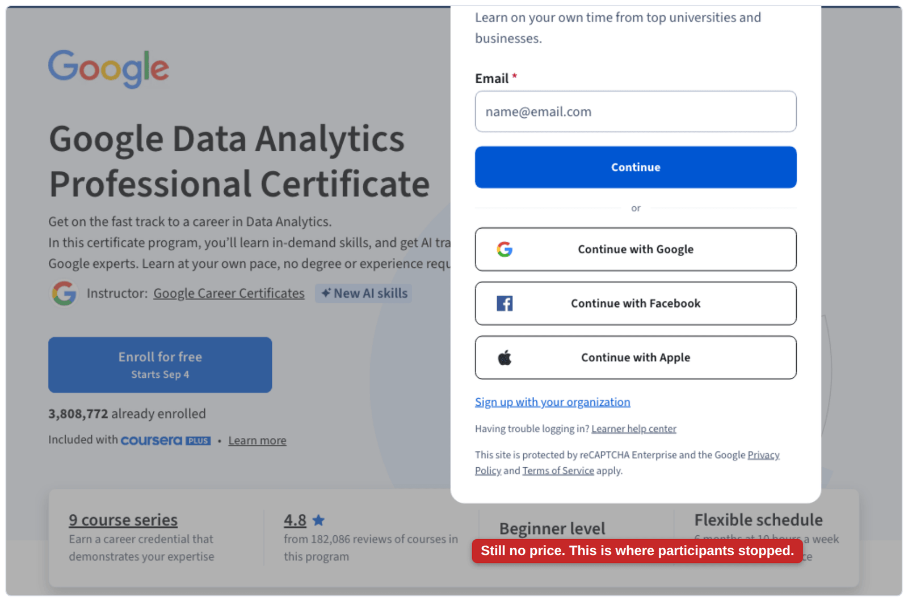
High Finding 2: the certificate exists on the page, but what it costs and what it takes to earn it do not
Task 3 asked people to compare the path to a certificate for two courses. Both found the words "shareable career certificate", one only after hunting:
Maybe outcomes. I don't know if this takes me there. Okay, it does.Participant 2, Task 3
Neither could find the fee or the requirements.
I do get a certificate here. I don't know if there's a fee. It says enroll for free.Participant 1, Task 3
I can see that we would have assignments per module, but I cannot see quizzes that need to be passed to finish the course.Participant 2, Task 3
The comparison ended in a shrug:
I believe they're both equal in terms of their path to a certificate.Participant 1, Task 3
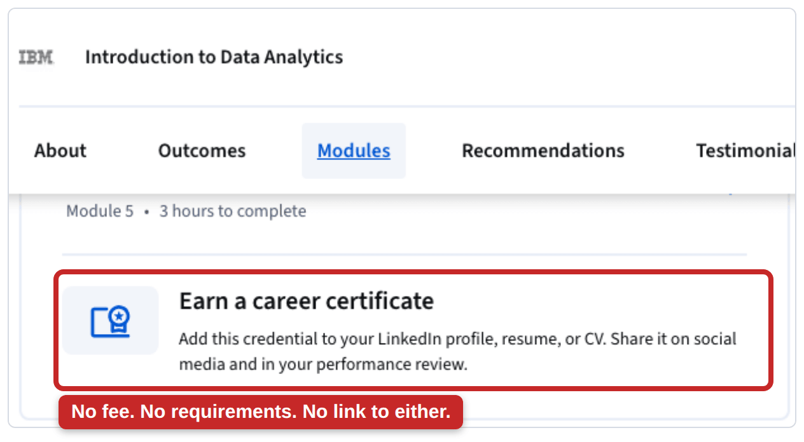
Medium Finding 3: beginner courses are hit or miss for a specific topic, and the filters only help if you already know Coursera's categories
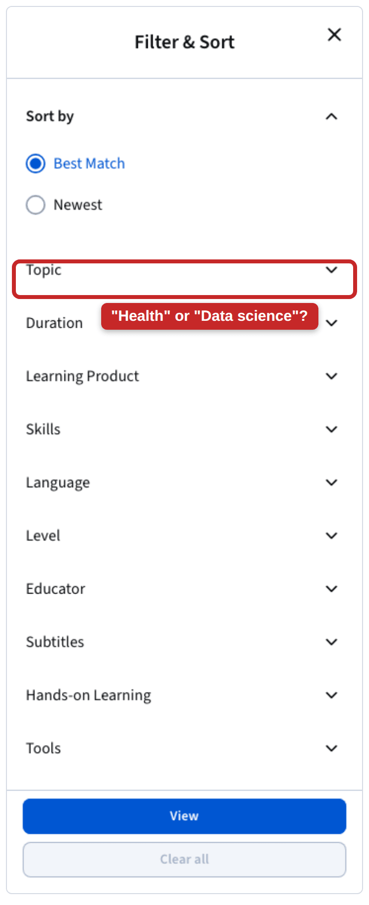
For a niche topic there was no beginner option at all:
It's an intermediate level, which I'm skeptical about, like, understanding, but I couldn't find anything beginner friendly.Participant 1, Task 2
The participant settled for the intermediate course because it came from a trusted school and said it takes two weeks. For a mainstream topic the level, language and duration filters worked well, but the Topic filter did not match the way the person thought about her subject. She tried Health first ("because I use it for science"), then backed out:
I think it should be data science in general.Participant 2, Task 2
She also hit near-duplicate results: "Oh, it's the same thing."
Surprise Something I did not expect: trust comes from reviews and brand names
Both participants decided between courses using the review score, the review count and the institution.
It has higher reviews.
IBM, more reliable.
This looks like a good one by Microsoft, but it has very low review.
I'm biased to look at reviews, but this one doesn't have one.
A course without reviews was effectively invisible.
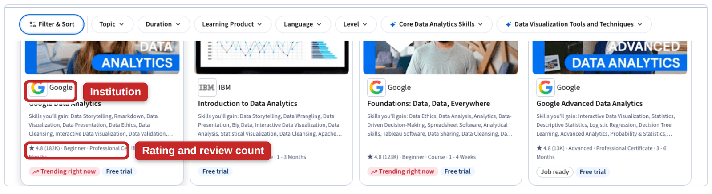
| Finding | Severity | Evidence | Heuristic |
|---|---|---|---|
| "Enroll for free" reads as free | High | Both participants said the course cost nothing in Task 4; one hit the paywall in Task 5 | Match between system and the real world |
| Certificate fee and requirements missing | High | Neither participant could find the fee or the requirements in Task 3 | Visibility of system status; recognition rather than recall |
| Beginner level and topic filters | Medium | No beginner option for a niche topic; Topic filter did not match the participant's words | Match between system and the real world; flexibility |
| Search page and chat panel clutter | Low | Flagged in the heuristic review; no participant mentioned it | Aesthetic and minimalist design |
The four issues after testing. The clutter issues dropped from medium to low once real people ignored them.
Recommendations
High 1. Say what free includes before asking for an account
Under the enroll button, show three lines: free to audit (watch all lectures and readings at no cost), certificate price after the trial ($49 a month, cancel anytime), and financial aid available. Change the button from "Enroll for free" to something honest like "Create an account to see enrollment options." I mocked this up on the Google Data Analytics page: same layout, same blue button, the truth underneath it. Fewer surprised sign-ups means fewer refunds and fewer one-star reviews, and people who are ready to pay see a price they can say yes to without creating an account first.
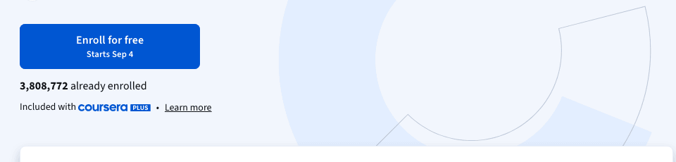
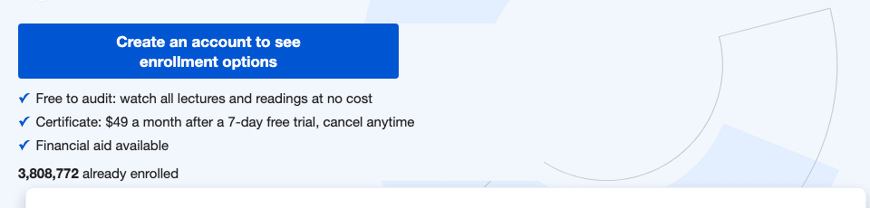
High 2. Put the certificate terms in one block on the course page, and repeat them on the result cards
On the course page, one block next to the enroll button that states the certificate terms in full: "Certificate: graded quizzes in each module and a final project. $49 a month or included with Coursera Plus. Audit for free without a certificate." On the search results page, one short line on each result card with the same facts, so two courses can be compared before either page is opened. The mockup below shows both places.
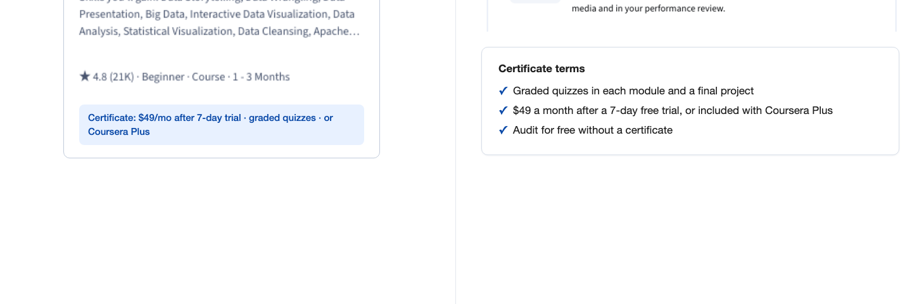
Medium 3. Make level and topic findable without knowing the taxonomy
When a search has no beginner results, say so and offer the closest beginner match instead of silently showing intermediate courses. Label topic filters in the words people search with, and collapse a course that appears in several programs into one result.
Low 4. Show search results first, everything else on request
Keep the AI chat closed behind a small Ask Coursera pill, collapse the AI overview to one sentence with a Show more, and shrink the cookie banner to a single line. I mocked both the search page and the course page this way. This is the lowest priority of the four: it makes the page nicer, but the test showed it is not what stops people. The trade-off is discoverability: a pill in the bottom corner is easier to miss than an open panel. To keep it noticeable, the AI sparkle in the pill could animate slightly to catch attention when someone lands on the Coursera homepage, a small pulse that says the chat is there without taking any space.
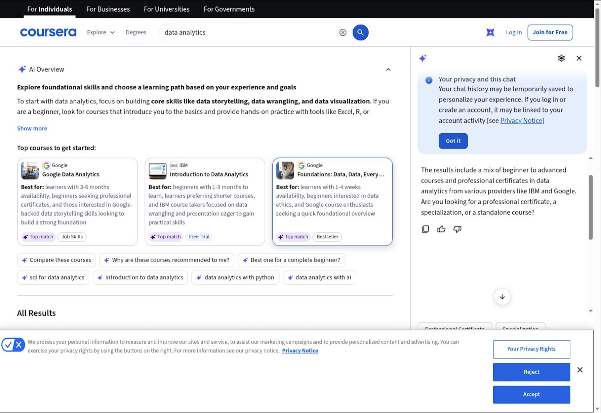
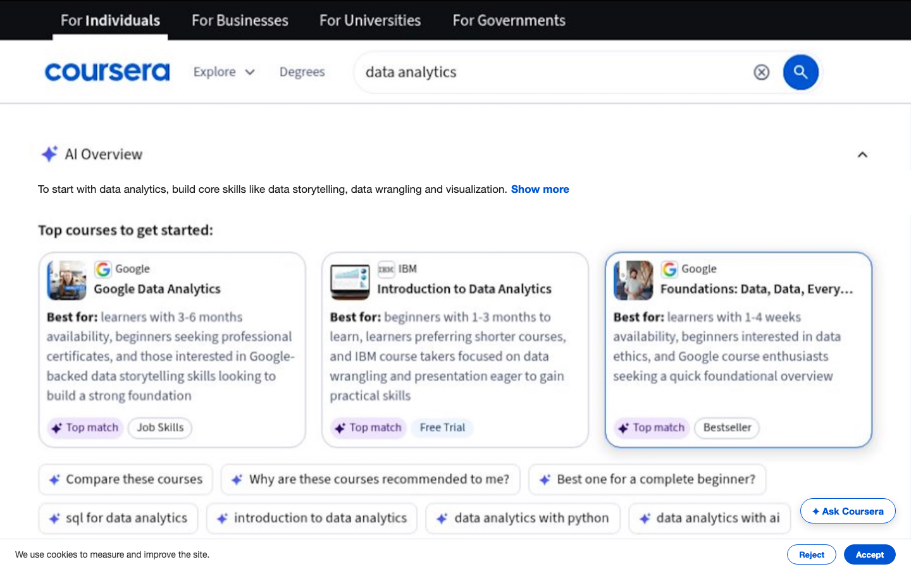
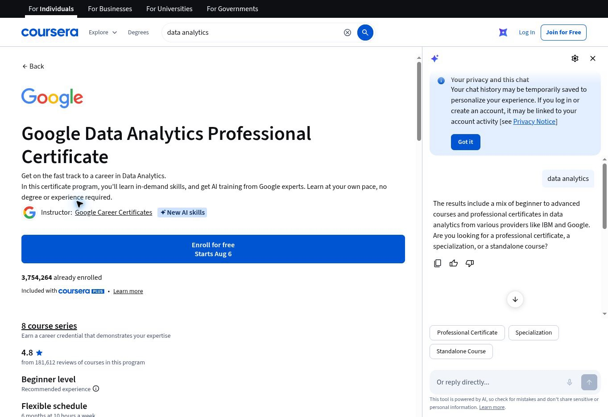
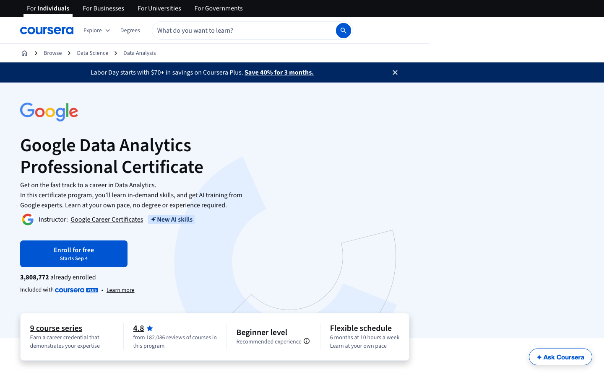
Reflections: what I would do differently
Recruit earlier and closer to the target. I wrote the study for college students and ended up testing researchers, because they were the people who said yes before the deadline. Their sessions were rich, and the money problem is the same for anyone, but I cannot claim these findings speak for undergraduates. Next time I would start recruiting through student groups in week one, not week six.
Rewriting the tasks was the most important decision I made. My first list would have produced five checkbox confirmations. When I rewrote Task 4, people had to say the price out loud, and Task 5 walked them to the paywall. I only saw the gap between what people believed ("nothing") and what Coursera charges because my tasks forced a statement and then a confrontation.
Get the numbers into the tool. I planned a 1-to-10 rating after each task and four questions at the end. What came back was the think-aloud recordings, and the ratings and answers did not come through in a form I could use. So the findings here rest on what people said and did rather than on scores. Next time I would build the rating into the task flow itself and check the first session's export before running the rest.
Test the tool as well as the site. The first thing one participant said was that she could not get back to the scenario once the task had started. Tasks need to be short enough to hold in your head, or the key constraint has to sit in the task title.
Point the heuristic review at the money. I spent my review time on the whole site and came out with two clutter issues and one wording issue. The test showed the wording issue was the one that mattered. If I did this again I would spend the heuristic review on the path from price to enrollment and leave the cosmetics for later.
Two sessions show a pattern; four or five would prove it. Both people believed the course was free, and both could not find the certificate terms. That is a consistent signal, but I would want more sessions, including someone outside science, before putting a number on how common it is.